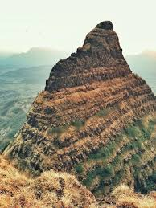

लिंगाणा किल्ला
Location : Click Here For Google Map
- माहिती
- लिंगाणा किल्ला महाराष्ट्र राज्याच्या पुणे जिल्ह्यात स्थित एक ऐतिहासिक किल्ला आहे. किल्ला पुणे शहरापासून सुमारे ५५ किमी दूर स्थित आहे. लिंगाणा किल्ल्याचा इतिहास मराठा साम्राज्याच्या स्थापनेच्या काळाशी संबंधित आहे. हा किल्ला खासकरून छत्रपती शिवाजी महाराजांच्या कार्यकाळात महत्त्वपूर्ण ठरला आहे. किल्ल्याचे स्थापत्य आणि संरचना त्याच्या सुरक्षा दृष्टीने अत्यंत मजबूत आहे, आणि किल्ल्याच्या शिखरावरून एक अप्रतिम दृश्य दिसते.
लिंगाणा किल्ल्याचे स्थापत्य दुर्गात्मक दृष्टिकोनातून अत्यंत विशेष आहे. किल्ल्याचे भिंती, बुरुज, दरवाजे आणि अन्य संरचनात्मक वैशिष्ट्ये यामुळे तो एक अभेद्य किल्ला बनला होता. किल्ल्याच्या शिखरावर पोहोचण्यासाठी एक कठीण चढाई असते, जी साहसी पर्यटकांसाठी एक रोमांचक अनुभव ठरते.
आजकाल, लिंगाणा किल्ला पर्यटकांसाठी एक महत्त्वाचे ऐतिहासिक स्थल आहे. किल्ल्याच्या निसर्ग सौंदर्यामुळे आणि त्याच्या ऐतिहासिकतेमुळे, हा किल्ला पर्यटकांसाठी आकर्षणाचा केंद्र बनला आहे. किल्ल्याच्या शिखरावर चढून त्या परिसराची दृश्ये पाहणे एक अनोखा अनुभव आहे.
Explore the historical beauty
